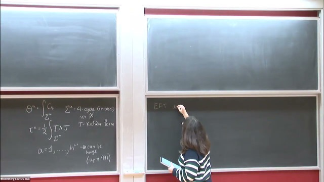
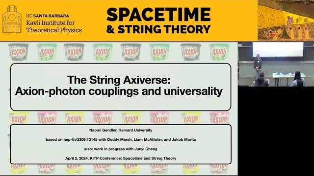
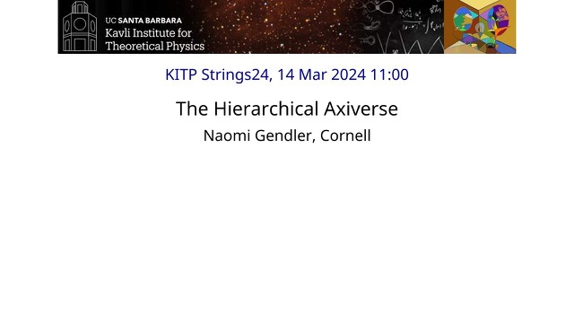
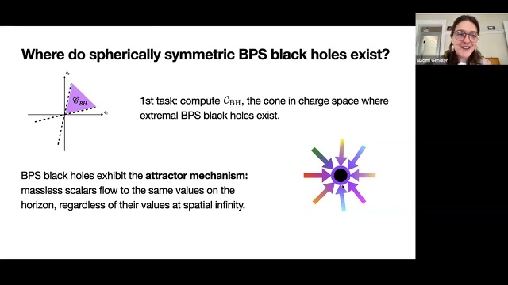
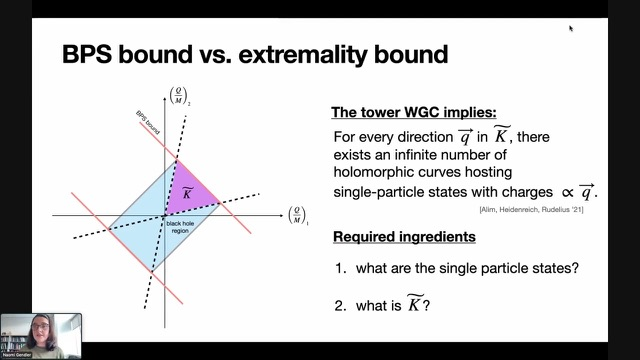
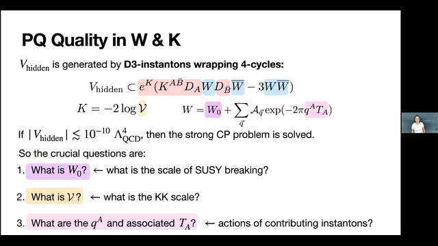

1:09:43Talks
Recorded talks

41:34The String Axiverse: Axion–Photon Couplings and Universality

kitp.ucsb.edu ↗The Hierarchical Axiverse

52:44Moduli Space Reconstruction and Weak Gravity

34:32Flops, Topological Invariants, and the Weak Gravity Conjecture

33:15PQ Axiverse
Invited plenary talks
- Sep 2026Universality in the AxiverseDESY Theory Workshop 2026, Hamburg, Germany
- Jun 2026The Geometric AxiverseStrings 2026, Shanghai, China
- May 2026PQ AxiverseSUSY 2026, University of Oklahoma, Norman, OK
- Aug 2025The String Theory Axiverse22nd Simons Physics Summer Workshop: Future Pathways for Fundamental Physics, Simons Center for Geometry and Physics
- Jul 2025QCD Axion Dark Matter and Hierarchies in the AxiverseString Phenomenology 2025, Northeastern University
- Jan 2025Hierarchies in the String AxiverseWorkshop on Symmetries and Gravity, Harvard CMSA
- Jan 2025String CosmologyPanelistStrings 2025, NYU Abu Dhabi, UAE
- Nov 2024QCD Axion Dark Matter in String TheoryDark World to Swampland: 9th IBS-IFT Workshop, Daejeon, South Korea
- Oct 2024QCD Axion Dark Matter in String TheoryMADMAX Collaboration Meeting, Munich, Germany
- May 2024Axions in the Dark DimensionSwamplandia 2024, Kloster Seeon, Germany
- Apr 2024The String Axiverse: Axion–Photon Couplings and UniversalityVideoKITP Conference: Spacetime and String Theory, UC Santa Barbara
- Mar 2024The Hierarchical AxiverseVideoKITP Workshop: What is String Theory?, UC Santa Barbara
- Sep 2023The (In)visible AxiverseSwamplandia 2023, Madrid, Spain
- Jul 2023The (In)visible AxiverseAxion 2023, Beijing, China
- Jun 2023Axion–Photon Couplings and Axion Dark Matter in String TheoryEnding Inflation and the Hot Big Bang, Simons Center for Geometry and Physics
- Apr 2023Axion–Photon Couplings in String TheoryString Theory Regional Meeting 2023, Virginia Tech
- Jan 2022Flops, Topological Invariants, and the Weak Gravity ConjectureVideoGeometry and Swampland Workshop, Banff International Research Station
Colloquia and invited seminars
- Oct 2026String Compactifications and the AxiverseVideoHigh Energy Theory Seminar, Institute for Advanced Study
- Oct 2026Universality in the AxiverseCity College of New York
- May 2025Fuzzy Axion Dark Matter in String TheoryStanford University
- Dec 2024QCD Axion Dark Matter in String TheoryHarvard University
- Nov 2024QCD Axion Dark Matter in String TheoryParticle Theory Seminar, Lawrence Berkeley National Laboratory / UC Berkeley
- Oct 2024QCD Axion Dark Matter in String TheoryBrandeis University
- Apr 2024Axions: A Bridge Between String Theory and the Real WorldColloquiumMax Planck Institute for Physics, Munich
- Feb 2024Glimmers from the AxiverseHarvard University
- Sep 2023Glimmers from the AxiverseString/Gravity Theory Seminar, Massachusetts Institute of Technology
- Sep 2023Glimmers from the AxiverseNortheastern University
- Sep 2023Moduli Space Reconstruction and Weak GravityVideoDual Mystery Channel seminar, IIT Madras (online)
- Apr 2023Moduli Space Reconstruction and Weak GravityVideoSwampland Seminar Series, joint with J. Moritz (online)
- Mar 2023Moduli Space Reconstruction and Weak GravityVirginia Tech
- Mar 2023Axions in String TheoryPhysics Seminar, Reed College
- Nov 2022Moduli Space Reconstruction and Weak GravityCalifornia Institute of Technology
- Jun 2022Calabi–Yau Flops and the Weak Gravity ConjectureLMU Munich
- Apr 2022PQ AxiverseCornell University
- Apr 2022PQ AxiverseMassachusetts Institute of Technology
- Mar 2022PQ AxiverseHarvard University
- Mar 2022PQ AxiverseNortheastern University
- Feb 2022PQ AxiverseUniversity of Liverpool
Contributed talks
- May 2025QCD Axion Dark Matter in String TheoryBerkeley Axion Workshop: Enabling Discovery of QCD Axion Dark Matter at the GUT Scale, Lawrence Berkeley National Laboratory
- Jul 2023Axion–Photon Couplings in String TheoryParallel talk, String Phenomenology 2023, Daejeon, South Korea
- Jul 2022PQ AxiverseGong Show, first placeStrings 2022, Vienna, Austria
- Jul 2022Superpotentials from Singular DivisorsParallel talk, String Phenomenology 2022, Liverpool, UK
- Oct 2021PQ AxiverseVideoSeminar Series on String Phenomenology (online)
- Jul 2020Merging the Weak Gravity and Distance Conjectures Using BPS Extremal Black HolesGong show, QFT and Geometry Summer School (online)
- Jul 2020BPS States and Extremal Black Holes at Infinite DistanceVideoSeminar Series on String Phenomenology (online)